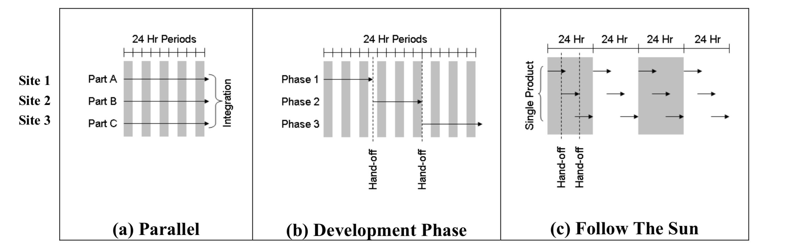
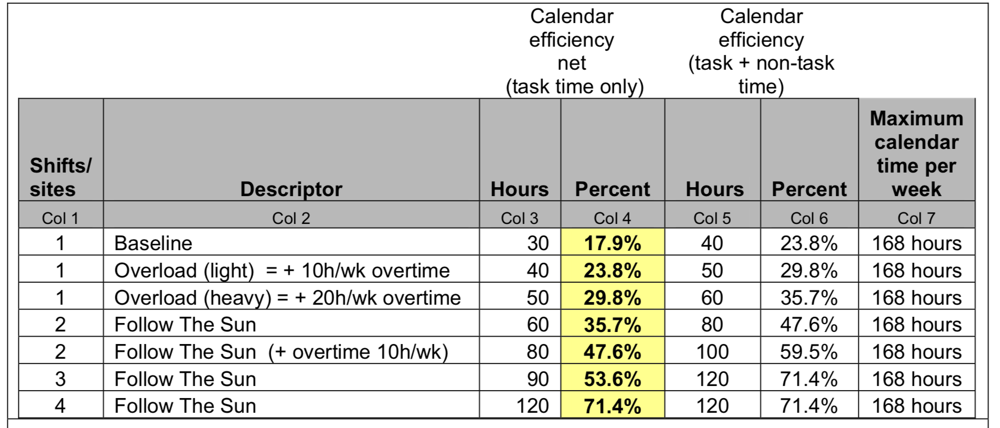
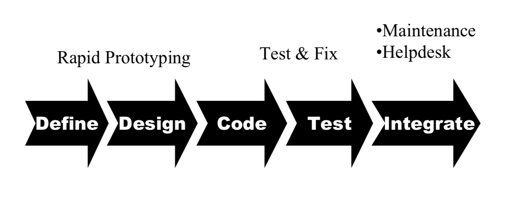

Why stop the production process after a working day of 8 hours, when there are 24 hours available? Follow the Sun (FtS), also referred to as round-the-clock development or 24-hour development, is a form of global software development.
The idea of this development method is to hand over work that has been done in a workday from one production site to the next site that is several time zones away (Carmel, E., Espinosa, J. A., & Dubinsky, Y. (2009)).
These handoffs are conducted daily at the end of a work shift. This means that the production does not have to stop after the 8 hour workday and can continue somewhere else in the world.
Follow the Sun (FtS) satisfies the following criteria (Carmel, E., Espinosa, J. A., & Dubinsky, Y. (2010)):
The main objective is to reduce the production time. Often, global software engineering methods are targeted at for example reducing the production cost instead, or to be able to work in parallel.
However, it does not mean that FtS cannot reduce the cost. Espionsa and Carmel (2003) show that the cost (based on production, coordination and vulnerability cost) decreases when there is a higher overlap in office hours.
The production sites are many time zones apart. Ideally, time zones are overlapping in a way that when the work day at one site ends, it starts at the next site.
If the overlap is minimized, the development time can be increased to 16 hours per day with two sites, or even up to 24 hours with three.
There is only one production site working on the product at each time point. Employees at different production sites are not working at the same time.
Every day handoffs are conducted at the end of the work shift. At the end of the workday at one production site, This way, the development process does not stop at the end of a workday, but will continue somewhere else in the world.
Why FtS?
The main objective of FtS software development is to speed up the development process and to reduce the time to market.
Time to market is the time it takes from the product conception until the product is available on the market for use or sale (Vesey, 1992).
Time-to-market is important for products that are outdated quickly, like most software and technology these days, and for example competitive e-commerce systems or innovative supply chain management (Carmel, E., Espinosa, J. A., & Dubinsky, Y. (2009)).
When FtS is applied correctly, it means that the development time can be increased to 16 hours per day with two sites, or even up to 24 hours with three.
Why would you apply FtS software development? We can look at this from two different perspectives:
Managerial side
By following the FtS software development, the company will have an international nature which has benefits such as being able to recruit different skilled members at different production sites and better customer connections.
Moreover, it is easier to keep customers satisfied if all production sites provide customer service, because of the increased available hours.
Although coordination can be hard (especially in the beginning), FtS could reduce the total cost. Carmel, E., Espinosa, J. A., & Dubinsky, Y. (2010) propose that FTS is beneficial for the software development speed when the reduction in duration due to reduced parallel working time costs, plus increased individual productivity due to time-boxing, is greater than the duration increase due to increased handoff coordination costs.
Technical side
When daily handoffs are applied correctly and efficiently, developers will start the day with a good overview of the product state.
Yap (n.d.) explains that handoffs are useful if the next production site receives a summary of what the previous active site has learned, the issues they have faced and collaborate on the design ideas they have worked on.
During working hours, developers are able to work locally with their colleagues and thus do not have to face the challenges of global software engineering.
Having to prepare the handoff for the next production site is a great way to summarize their work at the end of the day.
Furthermore, if there are issues that one production site is not able to solve, the next one might be able to solve it a few hours later.
Applying FtS
As we've already learned, the main intention of doing Follow the Sun (FtS) workflow is to speed up development process. In what ways can Follow the Sun (FtS) be more effective in improving development speed? To address this question we first need to understand that development speed is highly associated with the concept of Time-to-Market (Joseph T. Vesey (1992)). As explained by Smith, P.G., & Reinertsen, D.G. (1995), Time-to-Market is the length of time it takes from product conception until the product is available for use or sale. In applying FtS, it is important to keep in mind that the main goal of it is to push down Time-to-Market to be as small as possible.
The idea of Follow the Sun (FtS) is rather intuitive and somewhat quite generic. However, not all 24-hour-development workflow style can be considered as FtS. After doing a comprehensive study on the successes (i.e. Gupta, Amar. (2009) and A. Cameron (2004)) and failures (i.e. Carmel, Erran. (1999)) of effort put on implementing FtS, Carmel, E., Espinosa, J. A., & Dubinsky, Y. (2009) found that there's one key component that is mandatory in FtS application which is hand-offs. So, if a development style is continuously working 24 hours but not doing hand-offs then it is not FtS. Carmel, E., Espinosa, J. A., & Dubinsky, Y. (2009) explain that the main key of implementing FtS is the hand-off at the end of every shift (working day of each sub-team). This hand-off should be performed every day from one site to the next site in many time zones away for example from USA to India. The basic purpose of this hand-off is so that the work can be continued while one's teams rests for the night. The image below from Carmel, E., Espinosa, J. A., & Dubinsky, Y. (2010) illustrate the difference in the workflow of parallel models, development phase based models and Follow the Sun model.

On a more practical perspective, Carmel, E., Espinosa, J. A., & Dubinsky, Y. (2010) decomposed 4 main aspects that need to be addressed in FtS implementation: Calendar Efficiency, Phase Specificity, Iterative Development Method and Product Architecture. We are going to describe each an one of these while also look over them from both managerial and technical point of view.
Calendar Efficiency
A study (Espinosa, J. & Nan, Ning & Carmel, Erran. (2007)) experimented with time zone variations and found that as the difference between team's time zone increased, the development speed also increased. This indicate that there are speed benefit in working across time zones. Cummings, J., Espinosa, J., & Pickering, C. (2009) also found that when there is some working time overlap, such as synchronous hand-off, the effect on increasing process delay is so small. Based on this, Carmel, E., Espinosa, J. A., & Dubinsky, Y. (2010) introduced the term "calendar efficiency". It is defined as the percent of all the calendar time that is used productively for work. For example, there are 24x7 = 168 hours available per week thus a total 40-hours work week done by all sub-team only utilizes 23.8% of the calendar workweek. As shown in table below made by Carmel, E., Espinosa, J. A., & Dubinsky, Y. (2010), a workflow that use FtS with 4 sites (sub-team in different location) make the most out of the calendar time assuming each sub-team has 6 hours of effective work time per day thus 100% of the time in one day (24 hours) is utilized.

×
Pick Time Zone Location Accordingly
Really think on how much sites you want to have and the time zone difference between them to maximize the working time in the day of each sub-team.
Group Goals Rather Than Individual Task
Rather than assigning task individually, set the goals for team as a whole and break it down into tasks. These task can be assigned and reassigned to any of the sub-team thus supporting FtS concept.
Context Aware In Meeting
Before any kind of meeting including hand offs, make sure that all context are put in the meeting to avoid any kind of miscommunication so the task can be continued effectively by the next sub-team.
×
Create Clear Understandable Hand Off Document
Put anything that the next person need to know about the task including context, any decision made, and how to do some things. Putting yourself in their shoes will really help creating this documents better.
Manage Work Time Between Task and Non Task
Non task time are time spent for any task-unrelated work such as administration, replying email, etc. Make sure to do this task in non crucial work time for example not in the overlapping work time with the other sub-team.
Produce Self-Explanatory Code
Self-explanatory code are always favorable in any kind of environment but it is even more crucial in FtS to minimize question asked about how code works and what it means from person who pick up your work.
Phase Specificity
FtS has been proven effective in reducing duration within specific phase in a development flow. For example, take a look at this generic waterfall SDLC flow below taken from Carmel, E., Espinosa, J. A., & Dubinsky, Y. (2010). Applying FtS to a work that is only scoped within a particular phase such as Test Phase or Code Phase would be beneficial. Works that span over more than one phase, for example software architecting task that is included in Design, Code and Test Phase, may not be suitable for FtS because of higher communication amount is needed when moving from one phase to the next. Works within a particular SDLC phase is more suitable for FtS development because the specificity allows a more structured and granular hand-offs since the work scope is more specific. Some industrial evidence are Godinez, V (2007) where EDS claims to apply FtS in their testing team in Argentina and India and Business Week (2003) where they said PortalPlayer (early maker of Apple's iPod) do this within their R&D team in India and US.

×
Organize Team Based on Phase
Team up people from different location that work on the same phase. It can be people with different role. For example team up quality assurance engineer, development automation engineer, and UX engineer to work on a phase of product testing.
Define Phase Input-Output
A clear expectation of what's expected to be received and produced in each phase needs to be clear so that the communication needed between teams from different phase is minimized.
×
Focus Your Work on Your Team Scope
Try to focus to work on only your team scope and not thinking about other phase of the process to minimize communication between teams. Only poke on other's work when it's blocking your work.
If Blocked, Move On to Other Task
If your work are blocked by external team, then move on to other tasks available and explain the update and context on the hand-offs. It's better to not waste the working hour time that's need to wait on other people.
Iterative Development Method
With phase specificity, FtS only achieve partial and limited improvement within overall development speed. So Carmel, E., Espinosa, J. A., & Dubinsky, Y. (2010) stated that it is important to select FtS software development method that spans the entire development process and supports the special needs of daily hand-offs. They suggest that we turn more into iterative models rather than linear-sequential approaches that are unlikely to be optimal for FtS. In iterative models, each iteration includes all the activities of SDLC phases, making each phase more robust since its possible for a phases to be done again in the next iteration. They also argue that Agile approach is most promising for FtS based on these properties: short time-boxed iterations of 2-4 weeks each, feature-based requirements, exhaustive automatic testing, continuous integration and sustainable pace. Some study (Audy, J., & Fernandes, P. (2011), A. Gupta, L. Hu, T. Hedberg, C. Prendergast and I. Crk (2012) and J. J. Treinen, & S. L. Miller-Frost (2006)) showed that iterative models such as Agile adapt quickly to various software development environments meaning it can also adapt to FtS.
×
Apply Iteration Mindset
Even though iteration models is used it doesn't necessarily mean that the team will think that way. Constantly remind the team to think and do things iteratively.
Pick the Iteration Time Wisely
It is important to choose iteration phase time according to the teams need since it might depend on how far separated the location is and the working style of each team member.
Define Requirements As Clear As Possible
The requirements for task in each iteration should be defined as clear as possible to minimize the need of communication of the developers working in different time zone with the managerial role.
×
Keep Integration Green
Keeping all system test pass at the end of your working day is really crucial so that it gives a certainty to the work that is going to picked up.
Automate Manual Processes
Manual works are mostly what trigger the need of communication between team members so it's really important to automate things i.e. local testing so that everyone can do it on their own
Product Architecture
According to Carmel, E., Espinosa, J. A., & Dubinsky, Y. (2010), FtS can help accelerate development speed in cases where the product architecture where the complexity is high and the granularity is low, followed with the need to keep the team small in order to reduce the communication links between individuals. This is somehow violating one of the foundational principles of software management from Pressman, R (2007) that allowing very little work to be handed off at the end of the day. So instead of decomposing system in ways that lower the development groups' coupling by assigning the components to expertise-based group, the product's architect should be in a way that it's partitioned into smaller, relatively independet component. This can be done by decomposing based on features, modification requests, or modules. We should also take notes that decomposing it this way will make the team required to perform integration steps on their own. For example, a team is assigned fully to handle feature about payment. Then the sub-teams should all be able to perform development full cycle on their own from end-to-end such as code, test, and deployment. Even though it looks counter-intuitive, this works well in FtS environment because when a sub-team is finished partly in code phase, the next sub-team can continue the code phase or even start testing. It provides a good quality hand-offs between each sub-teams.
×
Create Clear Product Functionality
The product functionality should be clear and decomposable and managerial person can help to make that happen by coordinating with the product stakeholders.
Plan the Product
Determine what services and functionality will be provided. The plan also needs to include specific roles, processes and technology necessary to meet customer expectations.
×
Product Based Architecture
Architect the system in way that it's following the logic flow of the product so that it'll minimize collaboration between teams when working and synchronous with how the teams are organized.
Standardize Processes
Create guidelines and standards for making changes to the system and other kind of process so everyone is on the same page on doing things and the system doesn't grow out of the initial design.
Use Knowledge Sharing Tools
Its is important to share knowledge with your peers especially because they're going to continue your work. To ease up sharing and minimize communication, use knowledge sharing tools that is agreed upon your team and the company.
Practical Usage and Tools Required
The success of FtS implementation depends on reliable software tools and utilities. Kroll, J., Hashmi, S. I., Richardson, I., & Audy, J. L. (2013) identified that some of the best practices are the use of Agile method and using technologies and tools to develope FtS activities. The tools must include both managerial and technical aspects to support adapting to the changing software development processes. Management tools are essentials for planning schedules, managing sprints and tracking progress. It is also important to have the code repositories that is effectively utilized and have good version control management. Other technologies like conference video, emails and telephone calls allows us to perform synchronous and asynchronous communication between teams. Here we list some of practical implementation of FtS on each side and the suggested
Managerial Side
F2F Communication Technologies: Google Meets, Zoom, Skype, Microsoft Teams
Calendar Management: Google Calendar, Microsoft Outlook
Project Management: JIRA, Asana, Trello
Electronic Messages: Google Mail, Slack, Telegram, Mattermost
Shared File Storage: Dropbox, Google Drive, OneDrive
Shared Working Space: Google Docs, Google Sheet, Google Slide, Sharep
Time Zone Management: Google Calendar, Doodle, Boomerang, Spacetime.am
With rapidly evolving technology and tools, challenges that were once present in FtS may manifest in a different manner in today's day and age.
This section will give an overview on common challenges studied in literature. You can also find novel challenges proposed by us.
These novel challenges can be seen as hypothesis formulated by us, and are mainly based on case studies and experience. A challenge is considered novel if it does not
appear in (Kroll, J., Hashmi, S. I., Richardson, I., & Audy, J. L., 2013). It is a systematic literature review paper on challenges and best practices in Follow the Sun.
(Kroll, J., 2013) mentions a list of challenges and best practices to conduct when trying to implement FtS. ranks challenges and practices based on the frequency that they occur within the literature. We define notable challenges as ones that were high ranks. The challenges are divided into three main categories: coordination, communication and culture.
From the managerial perspective, aspects such as time-zone overlap, team building, co-ordination costs, number of sites and geographical dispersion can become challenges.
From the developer's perspective, aspects such as daily hand-off cycles, loss of communication richness, technical difficulties and different technical backgrounds may persist as challenges.
We divide the challenges into two roles, one from a managerial perspective and two, from a developer perspective.
Co-ordination
×
(Ågerfalk, P., Fitzgerald, B., Holmström, H., Lings, B., Lundell, B., & Ó Conchúir, E., 2005) defines temporal distance as the measure of dislocation in time experienced by the two parties how wish to interact. We will refer to this as the time-one challenge. (Ó Conchúir, E., Holmström Olsson, H., Ågerfalk, PJ, & Fitzgerald, B., 2009) did a study where they conducted interviews with managers, project leaders and technical staff regarding Follow the Sun. In these interviews, the project manager of Intel states that usually, the higher up on the hierarchy one is, the more flexibility in time is expected from them. This means that managers can be subject to work-related calls at 10 or 11 pm at night. The manager of HP states that the lag of responses can be frustrating and technical staff may need to go out of their way to keep up. This can result in the burnout of people. This raises a couple of challenges in FtS surrounding project managers. Managers have to make sure that the workflow is sustainable for their technical staff, to avoid the burnout of their staff. Managers also are responsible for taking charge when urgent situations occur. Temporal distance may lead to lag of responses which can cost time in such situations. So, within the general challenges of co-ordination, we formulate these new challenges.
Regarding scalability, many businesses grow rapidly and might resort to globally distirbuted teams. In these cases, the rapid growth might be the reason why FtS is failing. The teams are not prepared to deal with the changes, thus problems manifest at the very beginning.
Challenge | Set up a sustainable workflow
Challenge | Limit out-of-office hour working
Challenge | Urgent need of co-ordination
Challenge | Addressing Scalability
×
One interview shows that an architect in HP has to check his e-mail at night so as to not lag behind in conversation. The project manager of Fidelity states that staff infidelity can often feel like they have no control over the process due to the waiting of responses.(Treinen & Miller-Frost, 2006) lists that it is important to specify a level of detail within the hand-offs to ensure that there is clarity and understanding of the hand-off work. Another aspect mentioned is that source code management processes and infrastructure should be defined well. FtS depends on two variables, the teams and also the software. The software should be designed such that its architecture supports FtS and distributed development in general.
Challenge | Software infrastructure and architecture
Communication
×
We introduce a challenge of supervision here. From a software development perspective, an agile method works well however an agile method does not immediately relive the responsibilities of the manager to keep an overall supervision of the different teams. With the agile methods, distributed nature and temporal differences, keeping an up to date overview can be hard. A lack of overview can create discrepancies between want client wants, and what can actually be built. If the client requests a feature, perhaps consultations need to be organized with multiple teams to crave out its feasibility and cost estimation. Thus, we introduce the challenge of Supervision.
Challenge | Managerial Supervision
×
This hypothesis may seem like a slight contradiction to a best practice in GDSE of using video communication. However, we suspect that there are cases where video communication may not be possible or even preferable. Yet, we struggle to find literature and studies on what are the best measures on communication in GDSE, beyond video.Low bandwidth or a crowded office space may result in poor video communication. Depending on the region the team is working in, this can also be discussed. Daily hand-offs, SCRUMs are daily time-consuming tasks. Setting up video communication may add to this time-consumption. This may not be sustainable in the long-run. Follow-the-Sun may require employees to work out of office hours. In these cases, video communication may not be desirable for one of the parties.
The challenge here is to establish what method of communication suits what situation, and its effectiveness. For example, intuitively, the best alternative to video communication seems like an audio communication (phone call). However, if the teams have language barriers, documents that can be put into a translator may be more viable. Also, in situations where communication needs to be made out of office hours, an e-mail can ensure the information is reached rather than trying to call until the party picks up.
Challenge | Beyond video communication
Culture
×
In the study conducted by (Ó Conchúir, E., Holmström Olsson, H., Ågerfalk, PJ, & Fitzgerald, B., 2009), the manager of Intel states that they often use formalized writing to overcome language barriers. Furthermore, the project manager at Fidelity says that most employees are well-traveled and this contributes in understanding different cultures. Questions like how many holidays are there in your country and what is the normal timings of working in your city/country should be asked during meetings. This will give an idea to Team A of when to expect delays/lower efficiencies or even no work at all. Not only do these holiday timings differ within cultures, but multi-cultured countries may have an abundance of holidays. For example, India celebrates holidays from multiple religions (providing public holidays and school vacations to children). Here, one can also establish a personal understanding of which holidays Team B is interested in the most. (Maynard, n.d.) described the different Many countries work from 11 to 21:00 at night whilst others work on a 9am to 5pm schedule. Establishing this can save missed times within the day.
Challenge | Understanding work culture
×
The challenge here is for the development team to understand the feedback culture of an office as well. Some countries are very direct with feedback whereas in other countries, this can be seen as rude. This challenge is about understanding how to formulate a feedback mechanism that everyone feels comfortable with. We hypothesize that Feedback is an essential part of building trust within different teams. Perhaps, misunderstandings could be avoided by setting a framework for giving and receiving feedback between distributed teams.
Challenge | Feedback Sessions
pros
Reduced development costs.
(Carmel, E. and Agarwal, R. (2001)), Ebert, C. and De Neve, P. (2001) state that leveraging low labor costs can be a benefit. (Conchúir, Holmström, Ågerfalk, & Fitzgerald, 2006) conducted interviews with companies, wherein it claims that Fidelity has to pay its workers located in India about 50% less than its Irish team. In fact, the paper mentions that companies describe reduced development costs as one of the main drivers of Follow the Sun.
Cross-site modularization of development work
Cross site modularization of software allows for release of separate modules to the clients without requiring all modules to be present (Conchúir, Holmström, Ågerfalk, & Fitzgerald, 2006). We presume that cross-site modularization may also manifest itself as an unintended benefit of follow the sun. Due to the challenges described above, companies might try to reduce dependencies amongst cross-site teams, via modularization.
Closer Proximity to Market and Customer
With FtS, communication between customer and development teams can be shortened. Alternatively, customers can experience a faster rate of product delivery since in their perspective, only time-zone is relevant. For example, if a client requests a new feature at around 5 pm. Then, with distributed teams, a team in a different time-zone can start with the implementation.
Leverage the access to large skilled labor pool
Access to large skilled labor pool is a benefit of globally distributed software development. With follow-the-sun, division of tasks can be set such that this is leveraged. FtS would allow for sequential development of software from different locations.
Beneficial when a large percentage of issues are relatively simple
We speculate that FtS works well when distributed tasks are simple or isolated, (e.g. 24-hour technical support and data processing).
Superior documentation and knowledge dissemination
This benefit is mentioned in (Carmel, E. and Agarwal, R. (2001). The reasoning stated is that the nature of communication in FtS requires a dynamic approach. Teams are required to maintain informal knowledge sharing as well as formal knowledge repositories (daily hand-offs). This prompts for a enriched archive of informal and formal knowledge.
cons
Loss of informal communication
FtS prompts a hand-off culture that requires a level of detail to be present. This may lower the perception of informal communication that could be maintained if only video communication was sufficient.
Handoff overhead
The daily hand-off routines require task decomposition and lead to a considerable overhead (Carmel, E. and Agarwal, R., 2001). Hand-off overhead can also amplify if the task done previously is not completely understood and inevitably delays occur. This may create piling work for the team receiving the hand-offs.
Increased costs (delay, rework, setup)
Intuitively, setting up a working FtS is a commit of resources, whether it be money or time. It is also a constant commitment of resources, since one change in either working site may lead to an additional cost for all sites.
Infrastructure duplication
FtS requires hardware and software to be accessible at every location (Carmel, E. and Agarwal, R. (2001). This can involve additional costs, maintenance costs, and overall increased consumption of resources.
False benefit of leveraging time zones effectiveness
(Conchúir, Holmström, Ågerfalk, & Fitzgerald, 2006)'s study shows that the benefit of leveraging different time zones for faster development is a mythical benefit. In fact, for development, time zones cause unusual working hours, and reduced collaborative time. (Carmel, E., 2017) found that InfoSys trains its employees to be aware of this 24-hour concept and adapt to it.
Discipline
One aspect we analyze about FtS, is that it requires immense discipline from all teams involved. This discipline is required for daily hand-offs and calendar efficacy on top of the discipline required to maintain a distributed team in general. This can prove to be unsustainable in the long-run.
MODELLING
To give you an idea on how your project would look like in a FtS landscape, we have programmed a model based on a paper by Sooraj Pratap, P., & Mohapatra, K.J. (2008). The model takes in the location of the main company, the number of additional partners they are willing to take and the number of jobs to be done. It will then output the cost and time required by the main site to finish the work alone, and when FtS is implemented.
If works alone, it costs $ and takes days.
Using Follow the Sun :
Minimum cost of $ that lasts days.
Partners :
Minimum time of days that costs $.
Partners :
Quiz
References
Ågerfalk, P., Fitzgerald, B., Holmström, H., Lings, B., Lundell, B., & Ó Conchúir, E. (2005). A framework for considering opportunities and threats in distributed software development.
Audy, J., & Fernandes, P. (2011). Follow-the-Sun Software Development: A Controlled Experiment to Evaluate the Benefits of Adaptive and Prescriptive Approaches, Proceedings of the 24th International Conference on Software Engineering & Knowledge (SEKE 2012), 551-556.
Business Week (2003), The Rise of India. Published December 8, 2003.
Cameron, A. (2004). A Novel Approach to Distributed Concurrent Software Development using a “Follow-the- Sun” Technique.
Carmel, E. (1999). Global Software Teams: Collaborating Across Borders and Time Zones. Upper Saddle River, NJ : Prentice Hall-PTR.
Carmel, E., Espinosa, J. A., & Dubinsky, Y. (2009). Follow The Sun Software Development: New Perspectives, Conceptual Foundation, and Exploratory Field Study. Hawaii International Conference.
Carmel, E., Espinosa, J. A., & Dubinsky, Y. (2010). “Follow the Sun” Workflow in Global Software Development. Journal of Management Information Systems, 27(1), 17–38.
Carmel, E. (2017). Building Your Information Systems from the Other Side of the World: How Infosys Manages Time Zone Differences. Retrieved from undefined website.
(Conchúir, Holmström, Ågerfalk, & Fitzgerald, (2006). Global Software Development: Never Mind the Problems -Are There Really Any Benefits?
Cummings, J., Espinosa, J., & Pickering, C. (2009). Crossing Spatial and Temporal Boundaries in Globally Distributed Projects: A Relational Model of Coordination Delay. Information Systems Research, 20, 420-439.
Espinosa, J., & Carmel, E. (2003). Modeling Coordination Costs Due to Time Separation in Global Software Teams.
Espinosa, J., Nan, N. & Carmel, E. (2007). Do Gradations of Time Zone Separation Make a Difference in Performance? A First Laboratory Study. Proceedings - International Conference on Global Software Engineering, ICGSE 2007. 12-22. 10.1109/ICGSE.2007.20.
Godinez, V. (2007). Sunshine 24/7: As EDS' work stops in one time zone, it picks up in another. Dallas Morning News. Accessed January 2, 2007.
Gupta, A. (2009). The 24-Hour Knowledge Factory: Can It Replace the Graveyard Shift? Computer, 42(1), 66–73.
Gupta, A., Hu, L., Hedberg T., Prendergast, C., & Crk, I. (2012). Creating the 24-Hour Knowledge FactoryInformation Systems Management, 29(2), 100-111.
Holmstrom, H., Conchuir, E., Agerfalk, P., & Fitzgerald, B. (2006). Global Software Development Challenges: A Case Study on Temporal, Geographical and Socio-Cultural Distance. 2006 IEEE International Conference on Global Software Engineering (ICGSE’06), 3-11.
Kroll, J. (2013). Researching into Follow-the-Sun Software Development: Challenges and Opportunities. Www.Academia.Edu.
Maynard, J. (n.d.). Working Time Around the World.
Ó Conchúir, E., Holmström Olsson, H., Ågerfalk, P. J., & Fitzgerald, B. (2009). Benefits of global software development: exploring the unexplored. Software Process: Improvement and Practice, 14(4), 201–212.
Pressman, R (2007). Software Engineering: A Practitioner's Approach. New York: McGraw Hill.
Sooraj Pratap, P., & Mohapatra, K.J. (2008). Modeling the 24-h software development process. Strategic Outsourcing: An International Journal, 1(2), 122-141
Seifert, H. (2003). Paradigm Shift in Working Time Policy through Working Time Accounts — from Standard Working Hours to Controlled Flexibility. Journal of Human Resource Costing & Accounting, 7(3), 27–37.
Treinen, J. J., & Miller-Frost, S. L. (2006). Following the sun: Case studies in global software development. IBM Systems Journal, 45(4), 773–783.
Varhol, P. (2015). The complete history of agile software development. Retrieved from TechBeacon website
Vesey, J. T. (1992). Time-to-market: Put speed in product development. Industrial Marketing Management, 21(2), 151-158.
Yap, M. (n.d.). Follow the sun: distributed extreme programming development. Agile Development Conference (ADC’05).
Kroll, J., Hashmi, S. I., Richardson, I., & Audy, J. L. (2013). A systematic literature review of best practices and challenges in follow-the-sun software development. In Global Software Engineering Workshops (ICGSEW), 2013 IEEE 8th International Conference on (pp. 18-23). IEEE.
About This Page
We are a group of students from Delft University of Technology (Beyza Hizli, Kanya Paramita Koesoemo, Manisha Sethia, Ravisankar Ashok Vattekkat)
As part of Globally Distributed Software Engineering course, we created this blog to highlight the details of Follow the Sun Development and program a model using which potential teams could use to check whether or not they should "follow" it. We also improved a part of the algorithm that was provided in the Sooraj Pratap, P., & Mohapatra, K.J. (2008) paper.